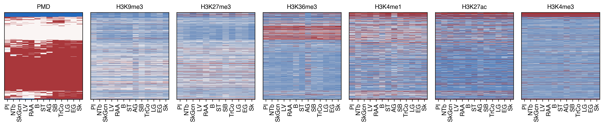

13. PMD histone#
Part of the Fig. 2 chapter — see it for the panel-by-panel map. The first code cell sets ENTEX_ROOT and activates the no-overwrite guard (see the Reproduction guide). Outputs shown are the author’s original run.
📥 Required input files#
This notebook reads the following files (paths resolve from ENTEX_ROOT/REF_ROOT; the setup cell sets them). See the chapter’s inputs.md for RAW-vs-derived tags.
f'{indir}clustering/merged/5kCG100k3C_summary.csv.gz'· joint summary objf'{pmddir}{ct}_10kb_hist.h5ad'· PMD/methyl-compartmentf'{pmddir}tissue13_kmeans3_mccomp.hdf'· PMD/methyl-compartment'/large_storage/zhoulab/resource/ENCODE/histone/metadata.tsv'· ext: ENCODEf'{indir}L1color.tsv'· metadata: colorf'{outdir}histone_10kb.hdf'· ext: histonef'{outdir}diff_10k/{hist}/{group_name}.stats.hdf'· otherf'{pmddir}LG_10kb_hist.h5ad'· PMD/methyl-compartmentf'{pmddir}B_10kb_hist.h5ad'· PMD/methyl-compartment
# === Reproduction setup — edit ENTEX_ROOT / REF_ROOT for your machine ===
import os, sys
ENTEX_ROOT = os.environ.get('ENTEX_ROOT', '/large_storage/zhoulab/zhoujt/project/ENTEx')
REF_ROOT = os.environ.get('REF_ROOT', '/large_storage/zhoulab/ref')
BOOK_ROOT = os.environ.get('BOOK_ROOT', f'{ENTEX_ROOT}/analysis/HumanCellEpigenomeAtlas')
sys.path.insert(0, BOOK_ROOT)
os.chdir(f'{ENTEX_ROOT}/analysis') # original working directory
import repro_guard # no-overwrite guard (default: skip existing)
import os
import glob
import cooler
import pandas as pd
import numpy as np
from multiprocessing import Pool, cpu_count
from collections import defaultdict
from scipy.stats import zscore, pearsonr, norm
from sklearn.cluster import KMeans
import anndata
import matplotlib as mpl
import matplotlib.pyplot as plt
import matplotlib.patches as patches
import seaborn as sns
mpl.style.use('default')
mpl.rcParams['pdf.fonttype'] = 42
mpl.rcParams['ps.fonttype'] = 42
mpl.rcParams['svg.fonttype'] = 'none'
mpl.rcParams['font.family'] = 'sans-serif'
mpl.rcParams['font.sans-serif'] = 'Helvetica'
import warnings
warnings.filterwarnings("ignore")
indir = f'{ENTEX_ROOT}/'
outdir = f'{indir}analysis/PMD_histone/'
pmddir = f'{indir}analysis/PMD/tissue/'
chrom_size_path = f'{REF_ROOT}/hg38/fasta/hg38.main.chrom.sizes'
chrom_sizes = cooler.read_chromsizes(chrom_size_path, all_names=True)
chrom_sizes = chrom_sizes.iloc[:22]
tissue_list = pd.Index(np.sort(['AG', 'Sk', 'EG', 'LV', 'RAA', 'B', 'ST', 'SkGcn', 'TrCo', 'LG', 'SB', 'NTb', 'PI']))
meta = pd.read_csv(f'{indir}clustering/merged/5kCG100k3C_summary.csv.gz', header=0, index_col=0)
meta[['Donor', 'Tissue', 'cluster', 'subtype', 'majortype']] = meta[['Donor', 'Tissue', 'cluster', 'subtype', 'majortype']].astype(str)
group_list = (meta['Tissue'] + '+' + meta['Donor']).sort_values().unique()
group_list
array(['AG+PT-1K2DA', 'AG+STL003', 'B+PT-1LGRB', 'B+PT-1LVAN',
'EG+PT-1JKYN', 'EG+PT-1LGRB', 'LG+PT-1JKYN', 'LG+PT-1LVAN',
'LV+PT-1LGRB', 'LV+STL003', 'M1C+H1930001', 'M1C+H1930002',
'NTb+PT-1K2DA', 'NTb+PT-1LVAN', 'P+9213', 'P+9216', 'PBMC+11714',
'PBMC+4809', 'PI+HP13049', 'PI+HP16134', 'RAA+PT-1LVAN',
'RAA+STL003', 'SB+PT-1K2DA', 'SB+PT-1LVAN', 'ST+PT-1LGRB',
'ST+PT-1LVAN', 'Sk+PT-1LGRB', 'Sk+PT-1LVAN', 'SkGcn+PT-1K2DA',
'SkGcn+PT-1LVAN', 'TrCo+PT-1LGRB', 'TrCo+PT-1LVAN'], dtype=object)
load and plot tissue PMD#
nc = 3
res = 10000
cluster_key = f'kmeans{nc}'
pmd = {}
for ct in tissue_list:
adata = anndata.read_h5ad(f'{pmddir}{ct}_10kb_hist.h5ad')
pmd[ct] = adata.obs[cluster_key].copy()
pmd = pd.DataFrame(pmd)
pmd.index = pmd.index.str.split('-').str[0] + '_' + (pmd.index.str.split('-').str[2].astype(int) // res).astype(str)
pmd = pmd.loc[pmd.isna().sum(axis=1)==0]
pmd = pmd.astype(int).replace({1: 2, 2: 1})
pmd.to_hdf(f'{pmddir}tissue13_kmeans3_mccomp.hdf', key='data')
load saved files#
tissue_map = {"Peyer's patch": 'SB',
'adrenal gland': 'AG',
'body of pancreas': 'PI',
'breast epithelium': 'B',
'esophagus muscularis mucosa': 'EG',
'gastrocnemius medialis': 'SkGcn',
'heart left ventricle': 'LV',
'right atrium auricular region': 'RAA',
'stomach': 'ST',
'suprapubic skin': 'Sk',
'tibial nerve': 'NTb',
'transverse colon': 'TrCo',
'upper lobe of left lung': 'LG'}
donor_map = {'ENCDO271OUW':'PT-1LVAN',
'ENCDO845WKR':'PT-1JKYN',
'ENCDO451RUA':'PT-1K2DA',
'ENCDO793LXB':'PT-1LGRB'}
pmd = pd.read_hdf(f'{pmddir}tissue13_kmeans3_mccomp.hdf', key='data')
bulk_meta = pd.read_csv('/large_storage/zhoulab/resource/ENCODE/histone/metadata.tsv', sep='\t', header=0, index_col=0)
bulk_meta = bulk_meta.loc[bulk_meta['File type']=='bigWig']
bulk_meta['donor'] = bulk_meta['Donor(s)'].str.split('/').str[2].map(donor_map)
bulk_meta['tissue'] = bulk_meta['Biosample term name'].map(tissue_map)
bulk_meta['group'] = bulk_meta['tissue'] + '+' + bulk_meta['donor']
bulk_meta['group'].value_counts()
group
EG+PT-1LVAN 6
EG+PT-1JKYN 6
EG+PT-1LGRB 6
B+PT-1LGRB 6
RAA+PT-1LVAN 6
LV+PT-1LVAN 6
Sk+PT-1JKYN 6
ST+PT-1LVAN 6
SB+PT-1K2DA 6
EG+PT-1K2DA 6
ST+PT-1JKYN 6
LG+PT-1LVAN 6
LG+PT-1K2DA 6
SkGcn+PT-1K2DA 6
SkGcn+PT-1JKYN 6
PI+PT-1K2DA 6
LG+PT-1JKYN 6
ST+PT-1LGRB 6
SB+PT-1JKYN 6
SkGcn+PT-1LVAN 6
SB+PT-1LGRB 6
RAA+PT-1LGRB 6
NTb+PT-1JKYN 6
LG+PT-1LGRB 6
TrCo+PT-1JKYN 6
PI+PT-1JKYN 6
NTb+PT-1K2DA 6
NTb+PT-1LVAN 6
SkGcn+PT-1LGRB 6
B+PT-1LVAN 6
LV+PT-1LGRB 6
NTb+PT-1LGRB 6
TrCo+PT-1LGRB 5
SB+PT-1LVAN 5
AG+PT-1LVAN 5
ST+PT-1K2DA 5
TrCo+PT-1LVAN 5
AG+PT-1K2DA 5
TrCo+PT-1K2DA 5
AG+PT-1JKYN 5
PI+PT-1LGRB 4
PI+PT-1LVAN 2
AG+PT-1LGRB 2
B+PT-1JKYN 1
Name: count, dtype: int64
merge histone data#
def load_tsv(sample):
file_name = f'{outdir}result/{sample}.10kb.tsv'
tmp = pd.read_csv(file_name, index_col=0, header=None, sep='\t')[5]
tmp.name = sample
return tmp
from concurrent.futures import ProcessPoolExecutor, as_completed
cpu = 24
with ProcessPoolExecutor(cpu) as executor:
futures = {}
for sample in bulk_meta.index:
future = executor.submit(
load_tsv,
sample=sample,
)
futures[future] = sample
data = []
for future in as_completed(futures):
data.append(future.result())
data = pd.DataFrame(data)
data = data.loc[:, data.columns.str.split('_').str[0].isin(chrom_sizes.index)].T
data.to_hdf(f'{outdir}histone_10kb.hdf', key='data')
L1_meta = pd.read_csv(f'{indir}L1color.tsv', sep='\t', header=0, index_col=0)
L1_meta = L1_meta.drop(['c7'], axis=0)
L1_annot = L1_meta['L1_abbr'].to_dict()
L1_color = L1_meta['color'].to_dict()
L1_color.update({L1_annot[k]: L1_color[k] for k in L1_annot if k in L1_color}) # also key by name
epi_L1 = L1_meta.index[L1_meta['L1_abbr'].str.split(' ').str[0]=='Epi']
# res = 10000
# pmd = pd.read_hdf(f'{indir}analysis/PMD/10kb/merged_kmeans4_onehot.hdf', key='data')
# pmd.columns = pmd.columns.str.split('-').str[0]
# pmd = pmd.iloc[:, np.arange(L1_meta.shape[0])*4+2] * 2 + pmd.iloc[:, np.arange(L1_meta.shape[0])*4+3]
# pmd.index = pmd.index.str.split('-').str[0] + '_' + (pmd.index.str.split('-').str[2].astype(int) // res).astype(str)
# pmd = pmd.drop(['c10','c16','c14','c31'], axis=1)
# pmd = pmd[epi_L1]
bulk_meta['Biosample term name'].value_counts()
Biosample term name
esophagus muscularis mucosa 24
tibial nerve 24
upper lobe of left lung 24
gastrocnemius medialis 24
stomach 23
Peyer's patch 23
transverse colon 21
body of pancreas 18
adrenal gland 17
breast epithelium 13
right atrium auricular region 12
heart left ventricle 12
suprapubic skin 6
Name: count, dtype: int64
bulk_meta['Experiment target'].value_counts()
Experiment target
H3K4me3-human 43
H3K27ac-human 43
H3K4me1-human 41
H3K9me3-human 39
H3K36me3-human 39
H3K27me3-human 36
Name: count, dtype: int64
Load histone data#
import qnorm
data = pd.read_hdf(f'{outdir}histone_10kb.hdf', key='data')
data_all = {}
for hist in bulk_meta['Experiment target'].unique():
sels = bulk_meta.index[(bulk_meta['Experiment target']==hist)# & (bulk_meta['group'].isin(group_list))
]
# sels = sels[sels.isin(data.columns)]
tmp = data.loc[pmd.index, sels]
# data_all[hist] = tmp / tmp.sum(axis=0) * 1e5
tmp = qnorm.quantile_normalize(tmp, axis=1)
data_all[hist] = tmp.groupby(bulk_meta.loc[sels, 'tissue'], axis=1).mean()
print(hist, data_all[hist].shape)
H3K9me3-human (259589, 13)
H3K4me3-human (259589, 13)
H3K36me3-human (259589, 13)
H3K27ac-human (259589, 13)
H3K4me1-human (259589, 13)
H3K27me3-human (259589, 12)
np.sort(bulk_meta['Biosample term name'].unique())
array(["Peyer's patch", 'adrenal gland', 'body of pancreas',
'breast epithelium', 'esophagus muscularis mucosa',
'gastrocnemius medialis', 'heart left ventricle',
'right atrium auricular region', 'stomach', 'suprapubic skin',
'tibial nerve', 'transverse colon', 'upper lobe of left lung'],
dtype=object)
merge all tissues/cell types#
data_pmd = pmd.mean(axis=1).sort_values()
data_hist = pd.DataFrame([data_all[hist].mean(axis=1) for hist in data_all.keys()], index=data_all.keys()).loc[:, data_pmd.index]
data_hist.index = data_hist.index.str.split('-').str[0]
data_pmd = pd.DataFrame(data_pmd).T
plot bin-by-tissue heatmap#
def order_row(data, nc):
data = data.reset_index(drop=True)
# Perform KMeans clustering
kmeans = KMeans(n_clusters=nc, random_state=0, n_init=10)
clusters = kmeans.fit_predict(data)
# Create a new dataframe with cluster labels
cluster_df = pd.DataFrame({'Cluster': clusters}, index=data.index)
# Sort the data by cluster and plot the heatmap
merged_data = pd.concat([data, cluster_df], axis=1).groupby(by='Cluster').mean()
cg = sns.clustermap(merged_data, cmap='vlag', figsize=(6,4))
rorder = cg.dendrogram_row.reordered_ind.copy()
corder = cg.dendrogram_col.reordered_ind.copy()
leg = merged_data.index[rorder]
count = pd.Series(clusters).value_counts().loc[leg]
sorted_data = pd.concat([data[clusters==i] for i in leg], axis=0)
return sorted_data, count, cluster_df, corder
nc = 8
group_palette = sns.color_palette('Set3', nc)
tmp, count, labelpmd, corder_pmd = order_row(pmd, nc=nc)
corder_pmd = pmd.columns[corder_pmd]
ncol = len(data_all)+1
fig, axes = plt.subplots(1, ncol, sharey='all', figsize=(3*ncol,3), dpi=300)
ax = axes[0]
sns.heatmap(tmp.loc[:, corder_pmd], cmap='vlag', vmin=0, vmax=2, ax=ax,
xticklabels=corder_pmd, yticklabels='', rasterized=True)
ax.set_xticklabels(ax.get_xticklabels(), rotation=90)
ax.set_title('PMD', fontsize=10)
for i,hist in enumerate(data_all):
ax = axes[i+1]
data = data_all[hist]
corder_his = corder_pmd[corder_pmd.isin(data.columns)]
sns.heatmap(data.iloc[tmp.index][corder_his], cmap='vlag', vmin=0, vmax=1, ax=ax,
xticklabels=corder_his, yticklabels='', rasterized=True)
ax.set_xticklabels(ax.get_xticklabels(), rotation=90)
ax.set_title(hist.split('-')[0], fontsize=10)
fig.tight_layout()
selb = np.random.choice(pmd.index, 5000, False)
# selb = pmd.index[labelpmd.groupby('Cluster').sample(n=500, random_state=0).index]
cg = sns.clustermap(pmd.loc[selb], figsize=(0.1, 0.1))
corder_pmd = cg.dendrogram_col.reordered_ind.copy()
rorder = cg.dendrogram_row.reordered_ind.copy()
corder = {}
for hist in data_all.keys():
data = data_all[hist]
cg = sns.clustermap(data.loc[selb], metric='cosine', figsize=(0.1, 0.1))
corder[hist] = cg.dendrogram_col.reordered_ind.copy()
ncol = len(data_all)+1
fig, axes = plt.subplots(1, ncol, sharey='all', figsize=(2*ncol,3), dpi=300)
ax = axes[0]
sns.heatmap(pmd.loc[selb[rorder]].iloc[:, corder_pmd], cmap='vlag', vmin=0, vmax=2, ax=ax,
xticklabels=pmd.columns[corder_pmd], yticklabels='', rasterized=True, cbar=False)
ax.set_xticklabels(ax.get_xticklabels(), rotation=90)
ax.set_title('PMD', fontsize=10)
for i,hist in enumerate(['H3K9me3', 'H3K27me3', 'H3K36me3', 'H3K4me1', 'H3K27ac', 'H3K4me3']):
ax = axes[i+1]
data = data_all[f'{hist}-human']
corder_his = pmd.columns[corder_pmd]
corder_his = corder_his[corder_his.isin(data.columns)]
sns.heatmap(data.loc[selb[rorder], corder_his], cmap='vlag', vmin=0, vmax=1, ax=ax,
xticklabels=corder_his, yticklabels='', rasterized=True, cbar=False)
ax.set_xticklabels(ax.get_xticklabels(), rotation=90)
ax.set_title(hist, fontsize=10)
for ax in axes:
sns.despine(ax=ax, top=False, right=False, left=False, bottom=False)
fig.tight_layout()
fig.savefig(f'PMD_histone/PMD_histone_tissue.svg', transparent=True)

pmd.columns[corder_pmd].map(L1_meta['L1_annot'])
Index(['Hema Bmem', 'Hema Tmem', 'Epi Breast Basal', 'Hema NK', 'Hema Bnaive',
'Hema Myeloid', 'Hema Mast', 'Hema Tnaive', 'Fibro Epineurial',
'Fibro Muscular', 'Fibro Adrenal', 'Fibro Heart',
'Fibro Gastrointestinal', 'Fibro Endoneurial', 'Fibro Skin',
'Myofibroblast', 'Neu Schwann', 'Endo Vascular', 'Epi Adrenal',
'Epi Trophoblast', 'Epi Acinar', 'Epi Enteric', 'Epi Gastric',
'Epi Endocrine', 'Mus Skeletal', 'Perivascular', 'Fibro Breast',
'Epi Ductal', 'Mus Cardiac', 'Endo Lymphatic', 'Epi Keratinous/Luminal',
'Epi Alveolar'],
dtype='object')
print(pmd.shape, labelpmd.shape)
(274014, 10) (274014, 1)
selb = np.random.choice(pmd.index, 5000, False)
# selb = pmd.index[labelpmd.groupby('Cluster').sample(n=500, random_state=0).index]
cg = sns.clustermap(pmd.loc[selb], figsize=(0.1, 0.1))
corder_pmd = cg.dendrogram_col.reordered_ind.copy()
rorder = cg.dendrogram_row.reordered_ind.copy()
corder = {}
for hist in data_all.keys():
data = data_all[hist]
cg = sns.clustermap(data.loc[selb], metric='cosine', figsize=(0.1, 0.1))
corder[hist] = cg.dendrogram_col.reordered_ind.copy()
ncol = len(corder)+1
fig, axes = plt.subplots(1, ncol, sharey='all', figsize=(5*ncol,5), dpi=300)
ax = axes[0]
sns.heatmap(pmd.loc[selb[rorder]].iloc[:, corder_pmd], cmap='coolwarm', vmin=0, vmax=2, ax=ax,
xticklabels=pmd.columns[corder_pmd], yticklabels='')
ax.set_xticklabels(ax.get_xticklabels(), rotation=270)
ax.set_title('PMD', fontsize=10)
for i,hist in enumerate(corder):
ax = axes[i+1]
data = data_all[hist]
corder_his = corder[hist]
sns.heatmap(data.loc[selb[rorder]].iloc[:, corder_his], cmap='vlag', vmin=0, vmax=1, ax=ax,
xticklabels=data.columns.map(bulk_meta['tissue'])[corder_his], yticklabels='')
ax.set_xticklabels(ax.get_xticklabels(), rotation=270)
ax.set_title(hist.split('-')[0], fontsize=10)
fig.tight_layout()
ncol = len(corder)+1
fig, axes = plt.subplots(1, ncol, sharey='all', figsize=(5*ncol,5), dpi=300)
ax = axes[0]
sns.heatmap(pmd.loc[selb[rorder]].iloc[:, corder_pmd], cmap='coolwarm', vmin=0, vmax=2, ax=ax,
xticklabels=pmd.columns.map(L1_meta['L1_annot'])[corder_pmd], yticklabels='')
ax.set_xticklabels(ax.get_xticklabels(), rotation=270)
ax.set_title('PMD', fontsize=10)
for i,hist in enumerate(corder):
ax = axes[i+1]
data = data_all[hist]
corder_his = corder[hist]
sns.heatmap(data.loc[selb[rorder]].iloc[:, corder_his], cmap='vlag', vmin=0, vmax=1, ax=ax,
xticklabels=data.columns.map(bulk_meta['Biosample term name'])[corder_his], yticklabels='')
ax.set_xticklabels(ax.get_xticklabels(), rotation=270)
ax.set_title(hist.split('-')[0], fontsize=10)
fig.tight_layout()
from sklearn.metrics import pairwise_distances
pairwise_distances(pmd.T, data.T, metric='correlation').mean()
0.863411718221148
# selb = np.random.choice(pmd.index, 5000, False)
data = data_all['H3K9me3-human']
selb = data.std(axis=1).sort_values(ascending=False).index[:5000]
data = data.loc[selb]
print(data.shape)
(5000, 39)
hist = 'H3K27ac-human'
data = pd.read_hdf(f'{outdir}histone_10kb.hdf', key='data')
selc = bulk_meta.index[bulk_meta['Experiment target']==hist]
datatmp = data[selc]
designtmp = bulk_meta.loc[selc].rename(columns={'Biosample term name': 'tissue', 'Donor(s)': 'donor'})
subclass_list = bulk_meta.loc[selc, 'Biosample term name'].unique()
subclass_list
array(['esophagus muscularis mucosa', 'breast epithelium',
'body of pancreas', 'heart left ventricle', 'suprapubic skin',
'right atrium auricular region', "Peyer's patch", 'stomach',
'gastrocnemius medialis', 'adrenal gland', 'transverse colon',
'upper lobe of left lung', 'tibial nerve'], dtype=object)
import itertools
for ct1, ct2 in itertools.combinations(subclass_list, 2):
group_name = f'{ct1}+{ct2}'.replace(' ', '_').replace('/', '-')
if os.path.exists(f'{outdir}diff_10k/{hist}/{group_name}.stats.hdf'):
stat_res = pd.read_hdf(f'{outdir}diff_10k/{hist}/{group_name}.stats.hdf', key='data')
if (stat_res['padj']<0.01).sum()>100:
print(f'"{ct1}", "{ct2}"', (stat_res['padj']<0.01).sum())
"esophagus muscularis mucosa", "breast epithelium" 26104
"esophagus muscularis mucosa", "body of pancreas" 51055
"esophagus muscularis mucosa", "heart left ventricle" 15160
"esophagus muscularis mucosa", "suprapubic skin" 19789
"esophagus muscularis mucosa", "right atrium auricular region" 21043
"esophagus muscularis mucosa", "Peyer's patch" 45589
"esophagus muscularis mucosa", "stomach" 26570
"esophagus muscularis mucosa", "gastrocnemius medialis" 53173
"esophagus muscularis mucosa", "adrenal gland" 50080
"esophagus muscularis mucosa", "transverse colon" 32401
"esophagus muscularis mucosa", "upper lobe of left lung" 36825
"esophagus muscularis mucosa", "tibial nerve" 35394
"breast epithelium", "body of pancreas" 27185
"breast epithelium", "heart left ventricle" 17215
"breast epithelium", "suprapubic skin" 2932
"breast epithelium", "right atrium auricular region" 20697
"breast epithelium", "Peyer's patch" 21711
"breast epithelium", "stomach" 18790
"breast epithelium", "gastrocnemius medialis" 54599
"breast epithelium", "adrenal gland" 22430
"breast epithelium", "transverse colon" 27885
"breast epithelium", "upper lobe of left lung" 18473
"breast epithelium", "tibial nerve" 17769
"body of pancreas", "heart left ventricle" 24967
"body of pancreas", "suprapubic skin" 12985
"body of pancreas", "right atrium auricular region" 30058
"body of pancreas", "Peyer's patch" 27027
"body of pancreas", "stomach" 31962
"body of pancreas", "gastrocnemius medialis" 74887
"body of pancreas", "adrenal gland" 23870
"body of pancreas", "transverse colon" 42493
"body of pancreas", "upper lobe of left lung" 30476
"body of pancreas", "tibial nerve" 36563
"heart left ventricle", "suprapubic skin" 6968
"heart left ventricle", "right atrium auricular region" 1850
"heart left ventricle", "Peyer's patch" 18192
"heart left ventricle", "stomach" 16084
"heart left ventricle", "gastrocnemius medialis" 45360
"heart left ventricle", "adrenal gland" 14683
"heart left ventricle", "transverse colon" 20545
"heart left ventricle", "upper lobe of left lung" 16084
"heart left ventricle", "tibial nerve" 14892
"suprapubic skin", "right atrium auricular region" 10112
"suprapubic skin", "Peyer's patch" 5752
"suprapubic skin", "stomach" 10685
"suprapubic skin", "gastrocnemius medialis" 48623
"suprapubic skin", "adrenal gland" 5239
"suprapubic skin", "transverse colon" 16126
"suprapubic skin", "upper lobe of left lung" 5657
"suprapubic skin", "tibial nerve" 6262
"right atrium auricular region", "Peyer's patch" 24820
"right atrium auricular region", "stomach" 22341
"right atrium auricular region", "gastrocnemius medialis" 46863
"right atrium auricular region", "adrenal gland" 20480
"right atrium auricular region", "transverse colon" 29336
"right atrium auricular region", "upper lobe of left lung" 20690
"right atrium auricular region", "tibial nerve" 18668
"Peyer's patch", "stomach" 20718
"Peyer's patch", "gastrocnemius medialis" 71065
"Peyer's patch", "adrenal gland" 17622
"Peyer's patch", "transverse colon" 20141
"Peyer's patch", "upper lobe of left lung" 17439
"Peyer's patch", "tibial nerve" 24536
"stomach", "gastrocnemius medialis" 63062
"stomach", "adrenal gland" 46687
"stomach", "transverse colon" 18482
"stomach", "upper lobe of left lung" 19631
"stomach", "tibial nerve" 30702
"gastrocnemius medialis", "adrenal gland" 71152
"gastrocnemius medialis", "transverse colon" 67413
"gastrocnemius medialis", "upper lobe of left lung" 64449
"gastrocnemius medialis", "tibial nerve" 65703
"adrenal gland", "transverse colon" 42630
"adrenal gland", "upper lobe of left lung" 19733
"adrenal gland", "tibial nerve" 21451
"transverse colon", "upper lobe of left lung" 32724
"transverse colon", "tibial nerve" 39266
"upper lobe of left lung", "tibial nerve" 24924
ct1, ct2 = "upper lobe of left lung", "breast epithelium"
stat_res = pd.read_hdf(f'{outdir}diff_10k/{hist}/{group_name}.stats.hdf', key='data')
selb = stat_res.index[stat_res['padj']<0.01]
selb = np.random.choice(selb, 5000, False)
tmp = datatmp.loc[selb, designtmp['tissue'].isin([ct1, ct2])]
res = 10000
adata1 = anndata.read_h5ad(f'{pmddir}LG_10kb_hist.h5ad')
adata1.obs.index = adata1.obs.index.str.split('-').str[0] + '_' + (adata1.obs.index.str.split('-').str[2].astype(int) // res).astype(str)
adata2 = anndata.read_h5ad(f'{pmddir}B_10kb_hist.h5ad')
adata2.obs.index = adata2.obs.index.str.split('-').str[0] + '_' + (adata2.obs.index.str.split('-').str[2].astype(int) // res).astype(str)
rorder = rorder[rorder.isin(adata1.obs.index) & rorder.isin(adata2.obs.index)]
print(len(rorder))
4897
from pydeseq2.dds import DeseqDataSet
from pydeseq2.default_inference import DefaultInference
from pydeseq2.ds import DeseqStats
for hist,df in bulk_meta.groupby('Experiment target'):
print(hist, len(df['Biosample term name'].unique()))
H3K27ac-human 13
H3K27me3-human 12
H3K36me3-human 13
H3K4me1-human 13
H3K4me3-human 13
H3K9me3-human 13
bulk_meta['Biosample term name'].value_counts()
Biosample term name
esophagus muscularis mucosa 24
tibial nerve 24
upper lobe of left lung 24
gastrocnemius medialis 24
stomach 23
Peyer's patch 23
transverse colon 21
body of pancreas 18
adrenal gland 17
breast epithelium 13
right atrium auricular region 12
heart left ventricle 12
suprapubic skin 6
Name: count, dtype: int64